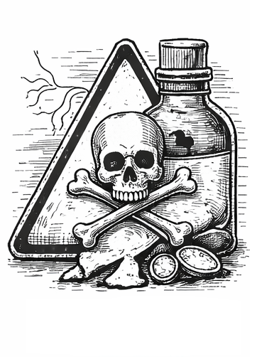

The Problem
Milk Powder has been linked to serious food safety investigations involving contaminated or improperly processed products. In United States, authorities identified batches containing dangerous bacteria or unauthorized additives. The discovery triggered recalls and regulatory scrutiny. Agencies including the FDA and its Office of Criminal Investigations have pursued enforcement actions against companies responsible for distributing unsafe Milk Powder, underscoring the importance of strict oversight in the food production chain.
Interesting Fact
Experts consider this product highly vulnerable to fraud due to its market value.